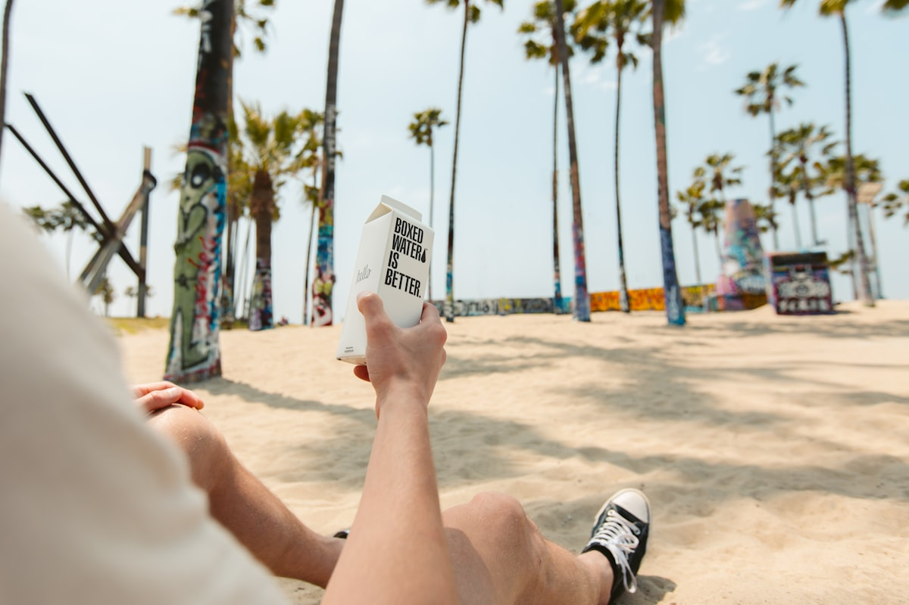
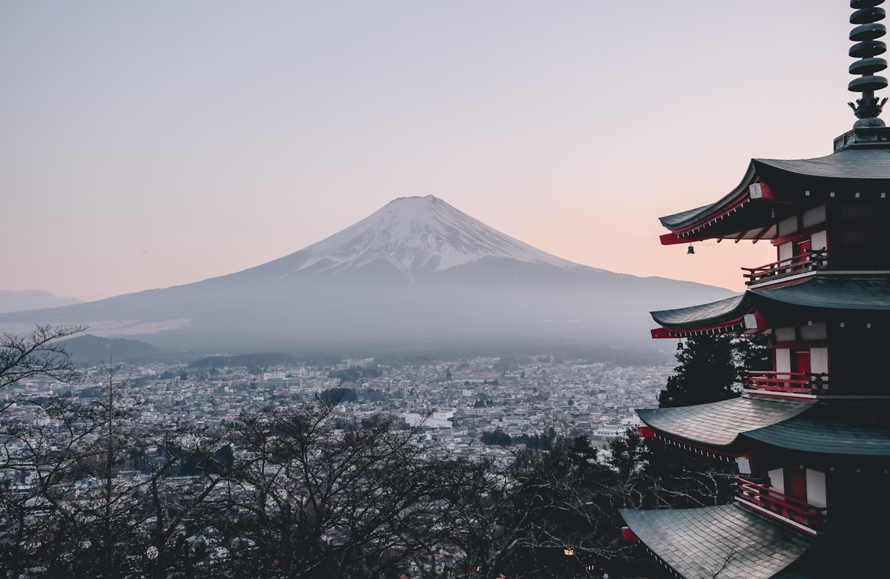

Choose Your Adventure
Whether you have a long weekend or two weeks, we've designed itineraries that maximize your experience while keeping travel comfortable and efficient. All routes leverage China's high-speed rail network for seamless city-hopping.






Route 1: Beijing Express
Day 1: Imperial Beijing
Arrive at Beijing Capital Airport → Check into hotel near Wangfujing → Tiananmen Square → Forbidden City (3–4 hours) → Jingshan Park for sunset panorama → Peking Duck dinner at Quanjude
Day 2: The Great Wall
Early departure to Badaling Great Wall (arrive by 8 AM) → Cable car up, walk 2–3 hours → Lunch at base → Afternoon: Summer Palace → Evening: Beijing Opera at Liyuan Theatre
Day 3: Temple & Hutong Day
Temple of Heaven (morning tai chi watching) → Hutong rickshaw tour through traditional alleys → Lunch in a hutong home → Nanluoguxiang for shopping → Houhai Lake bars at sunset
Day 4: Last Moments
Morning: National Museum of China → Lunch: Jianbing breakfast → Souvenir shopping at Panjiayuan Antique Market → Afternoon departure
Estimated budget: ¥4,000–6,000 per person (excluding flights)
Route 2: Golden Triangle
Days 1–2: Beijing
Follow the Beijing Express itinerary for Days 1–2, covering the Forbidden City, Great Wall, and Summer Palace.
Day 3: Beijing → Xi'an
Morning: Temple of Heaven → Afternoon: High-speed train to Xi'an (4.5 hours) → Evening: Muslim Quarter street food tour
Day 4: Xi'an Highlights
Morning: Terracotta Army (arrive by 8:30 AM) → Afternoon: Xi'an City Wall cycling → Evening: Tang Dynasty Show & dumpling banquet
Day 5: Xi'an → Shanghai
Morning: Big Wild Goose Pagoda → Flight to Shanghai (2.5 hours) → Evening: The Bund night walk & Huangpu River cruise
Day 6: Shanghai Exploration
Morning: Yu Garden & City God Temple → Lunch: Xiaolongbao at Din Tai Fung → Afternoon: Shanghai Tower observation deck → Evening: Xintiandi for dinner and nightlife
Day 7: Shanghai & Departure
Morning: Tianzifang art district → Shopping on Nanjing Road → Afternoon departure from Pudong Airport
Estimated budget: ¥8,000–12,000 per person (excluding flights)
Route 3: Panda & Poetry
Day 1: Shanghai Arrival
Arrive in Shanghai → The Bund evening walk → Dinner on Nanjing Road → Night: ERA Acrobatics Show
Day 2: Shanghai → Chengdu
Morning: Yu Garden → Flight to Chengdu (3 hours) → Afternoon: Wide & Narrow Alleys → Evening: Sichuan Hot Pot dinner + Face-Changing Opera show
Day 3: Panda Day
Arrive at Panda Base by 7:30 AM → Spend morning with the pandas → Afternoon: Jinli Ancient Street → Tea house experience → Evening: Sichuan food tour
Day 4: Chengdu → Hangzhou
Morning: Wuhou Shrine → Flight to Hangzhou (2.5 hours) → Afternoon: West Lake boat ride → Evening: Impression West Lake show
Day 5: Hangzhou & Return
Morning: Lingyin Temple & Feilai Peak → Longjing tea tasting at Dragon Well village → Afternoon: High-speed train to Shanghai (1 hour) → Departure
Estimated budget: ¥7,000–10,000 per person (excluding flights)
Route 4: Grand China Tour
Days 1–3: Beijing
Forbidden City, Great Wall, Summer Palace, Temple of Heaven, Hutong tour, Peking Duck, Beijing Opera
Days 4–5: Xi'an
Terracotta Army, City Wall, Muslim Quarter, Big Wild Goose Pagoda, Dumpling Banquet
Days 6–8: Chengdu
Giant Panda Base, Sichuan Hot Pot, Face-Changing Opera, Tea House culture, Wide & Narrow Alleys
Days 9–10: Hangzhou
West Lake, Lingyin Temple, Longjing Tea Village, Silk Museum, Impression West Lake
Days 11–14: Shanghai
The Bund, Shanghai Tower, Yu Garden, Xintiandi, Tianzifang, Nanjing Road shopping, ERA Show, Huangpu River cruise, farewell dinner at a rooftop bar
Estimated budget: ¥15,000–22,000 per person (excluding flights)
Seasonal Recommendations
🌸 Spring (March–May)
Best overall season. Cherry blossoms in Beijing, peach blossoms along the Great Wall, and perfect weather in all cities. Book early — Chinese domestic tourism peaks during May Golden Week.
☀️ Summer (June–August)
Hot and humid, but lotus flowers at West Lake are stunning. Chengdu's pandas are active. Great time for morning and evening sightseeing. Carry an umbrella for sudden rain.
🍂 Autumn (September–November)
The sweet spot. Golden foliage on the Great Wall, osmanthus flowers in Hangzhou, and comfortable temperatures everywhere. The Mid-Autumn Festival adds cultural magic.
❄️ Winter (December–February)
Cold but magical. Snow on the Great Wall is unforgettable. Fewer tourists mean better photos and lower prices. Chinese New Year (January/February) is a cultural extravaganza.
💰 Budget Planning for Japanese Travelers
China is remarkably affordable compared to Japan. A good hotel costs ¥300–600/night, meals ¥30–80 per person, and high-speed rail ¥70–550 per leg. With visa-free entry and budget flights from Japan (from ¥15,000 round trip), even a week-long trip can cost less than a domestic trip within Japan!